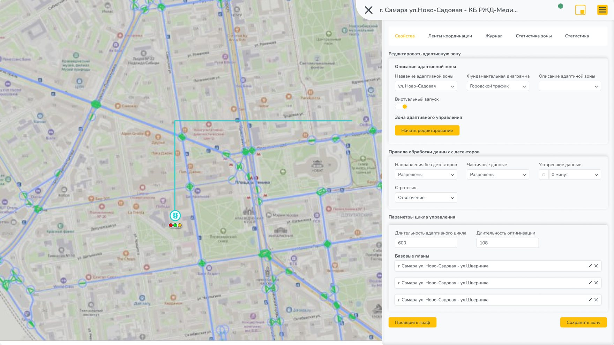
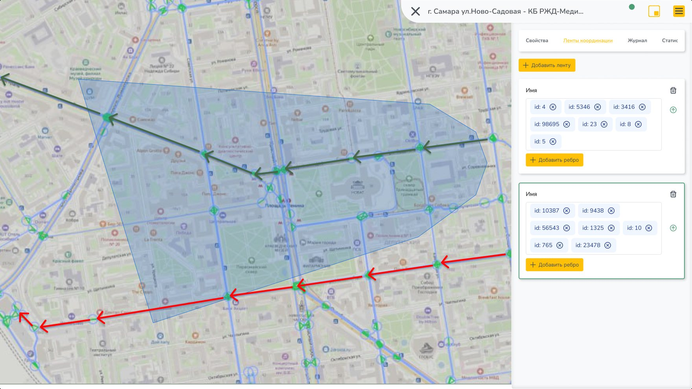
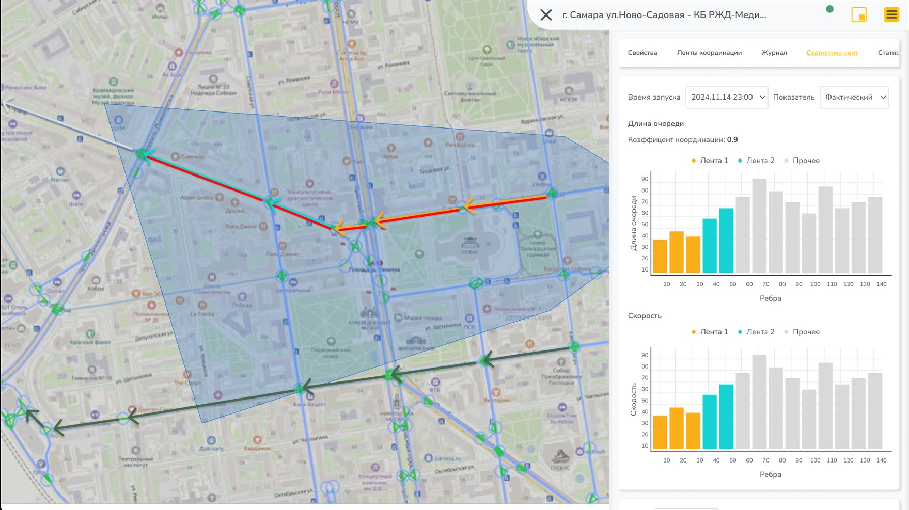
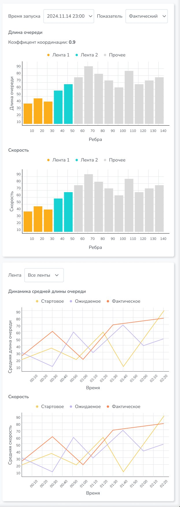
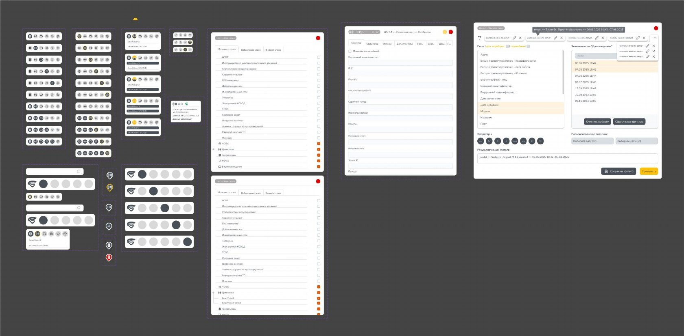

ВойсЛинк: настроить адаптивное управление светофорами на карте
ГИС управления транспортными потоками города для администраций, губернаторов и транспортных инженеров. Главный сценарий кейса: инженер собирает адаптивную зону, задаёт в ней ленты координации и проверяет по графикам, что очереди сокращаются.
Роль
Ведущий UX/UI-дизайнер
Что делал
Получал задачу, чаще без ТЗ, и сам доводил её до макетов: состав экранов, состояния, переходы
Система
Дизайн-система и библиотека компонентов для дизайнеров и фронтенда
Результат
Каждый новый модуль выходит на 1–1,5 месяца быстрее
[ задача ]
Сложная настройка без потери карты
Адаптивная зона — это группа перекрёстков, где светофоры подстраиваются под поток по данным детекторов. У зоны десятки параметров, а результат настройки виден только на карте и на графиках. Инженеру нужно менять параметры и сразу видеть, к каким улицам они относятся.
Отсюда главное решение модуля: карточка зоны открывается панелью сбоку, а не отдельной страницей. Объект на карте и его данные видны одновременно, вкладки панели повторяют шаги работы инженера.
[ главный сценарий ]
От параметров зоны до проверки результата
1Свойства зоны
Параметры собраны в три блока по смыслу: описание зоны, правила обработки данных с детекторов и параметры цикла управления. Отдельно решено, что делать с неполными данными: направления без детекторов, частичные и устаревшие данные настраиваются явно. Перед сохранением граф зоны можно проверить.

Вкладка «Свойства»: три блока параметров, проверка графа и сохранение
2Ленты координации
Зона показана на карте полигоном, ленты — стрелками по улицам. Лента собирается из рёбер графа: в панели это карточка со списком рёбер, на карте — маршрут. Выбранная лента подсвечена и в списке, и на карте, поэтому инженер не сверяет идентификаторы глазами.

Ленты координации: выбранная лента выделена в панели и на карте
3Проверка по статистике
После запуска инженер смотрит длину очереди и скорость по рёбрам. Цвета лент на графике и на карте совпадают, так что столбец сразу связывается с улицей. Ниже динамика по времени в трёх линиях: стартовое, ожидаемое и фактическое значение. Видно, сработала ли настройка так, как рассчитывали.

Статистика лент: цвета на графике и на карте совпадают

Панель целиком: стартовое, ожидаемое и фактическое
[ система ]
Дизайн-система для карты и панелей
Панели, вкладки, поля, чипы и графики собраны в библиотеку компонентов, которой пользуются и дизайнеры, и фронтенд-разработчики. Новый модуль собирается из готовых частей, поэтому интерфейсы стали единообразными, а вывод каждого нового модуля в эксплуатацию сократился на 1–1,5 месяца.
Маркеры и статусы объектов
Менеджер слоёв
Карточка объекта
Конструктор фильтров

Фрагмент библиотеки: маркеры со статусами, менеджер слоёв, свойства объекта и конструктор фильтров
[ результат ]
Каждый новый модуль выходит на 1–1,5 месяца быстрее
За три года полностью переработан интерфейс системы: новые модули спроектированы, существующие обновлены.